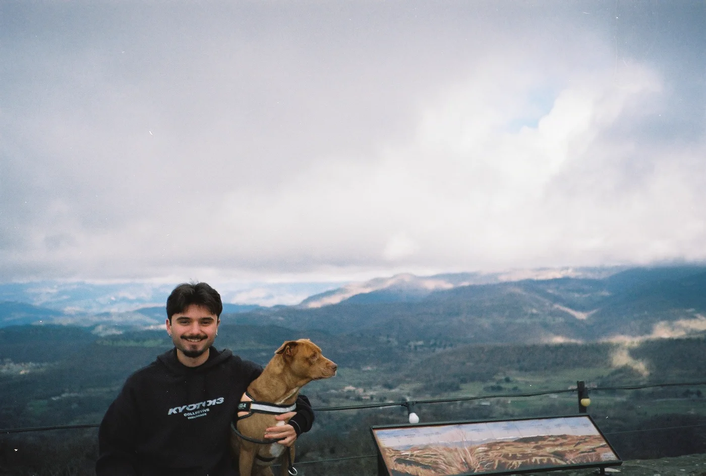
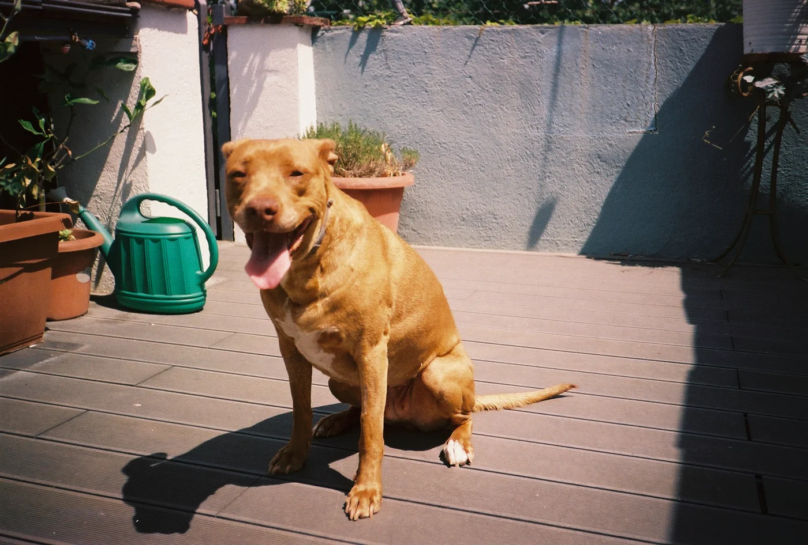
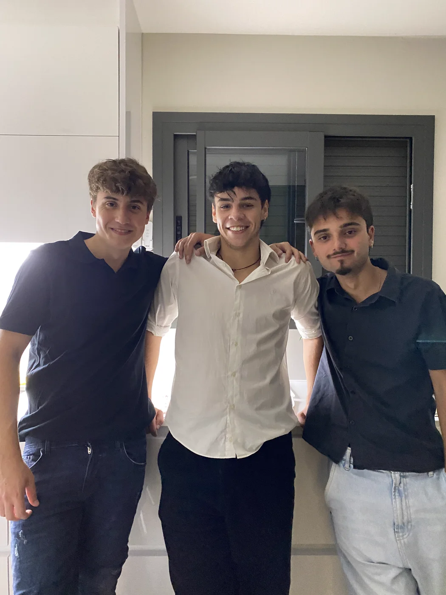
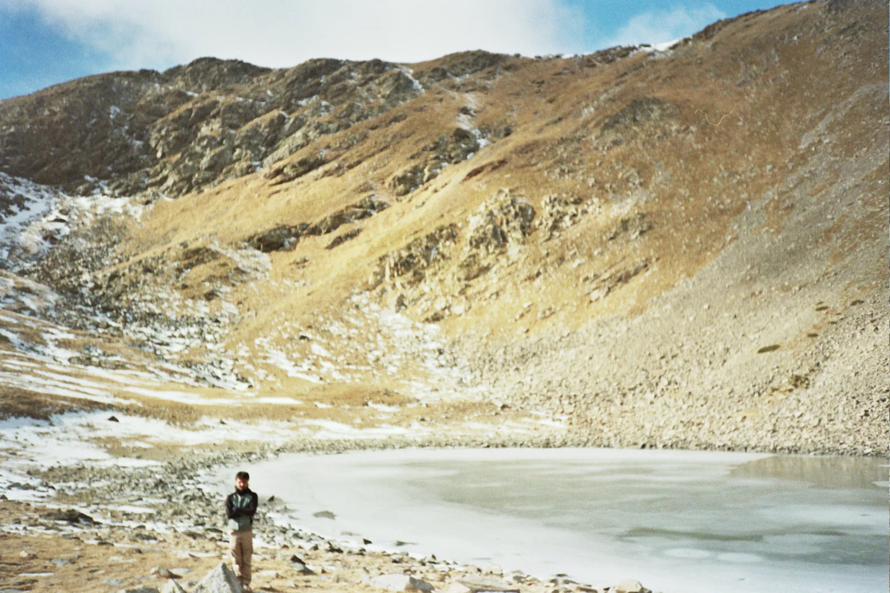

I'm an audiovisual designer based in Barcelona, currently working as a Junior Graphic Designer & Video Content Creator at Cafler.
My work moves across video, graphic design, and photography — I like being able to jump between disciplines and bring the same eye for detail to all of them.
I care about craft. Every project, big or small, gets the same attention to composition, rhythm, and finish.
Outside of work you'll usually find me watching a film, playing video games, following sports, or out with friends — my dog Baby is usually not far away.



